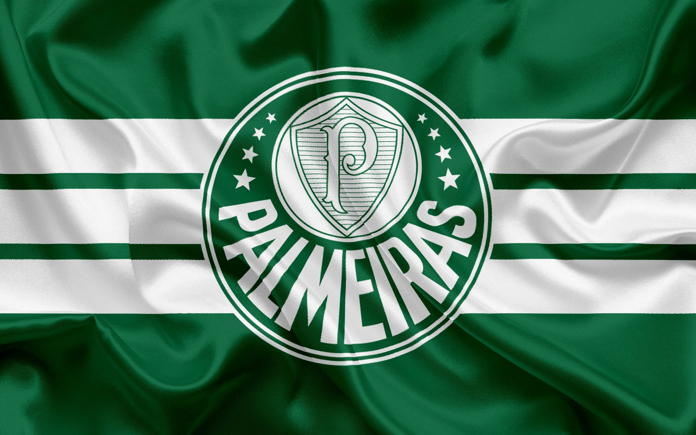

Sao Paulo
O São Paulo Futebol Clube, Foi fundado em 25 de janeiro de 1930, tendo interrompido suas atividades em maio de 1935, e as retomado em dezembro do mesmo ano.

Corinthians
Foi fundado como uma equipe de futebol no dia 1 de setembro de 1910 por um grupo de operários na região da Ponte Grande, no bairro do Bom Retiro. Seu nome foi inspirado no Corinthian Football Club de Londres, que excursionava pelo Brasil.

Palmeiras
Em 1942, quando estava estabelecida como uma força do futebol paulista, a equipe foi obrigada a trocar de nome, passando a se chamar Sociedade Esportiva Palmeiras em decorrência da Segunda Guerra Mundial.